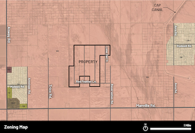

An airstrip is being proposed for development on Rural Homestead zoned land in the Avra Valley, just north of Manville and west of Reservation. The details of the airstrip were presented at a meeting on 1-July-2025, with the presentation materials given in the following link:
Original Briefing About the Airstrip PlansThe following letter outlines community opposition to this project:
Letter Describing the Project and Opposition to it
The land for development is already being used for a variety of purposes, including parachute training, helicopter training and aerial-drop training for water and suspected fire suppression chemicals:
Videos and Photos of Aerial Activity Currently Ongoing These activities appear contrary to the letter and intent of Pima County Rural Homestead Zoning (see link, below), and the airstrip would further aggravate this inconsistent use of quiet, rural residential land:
Zoning Documents for Pima CountyFor more information, join us on Facebook:
Our FacebookFor questions, also feel free to email us:
Email Us at northloneowl@gmail.comGeneral Documents:
Various Other Documents